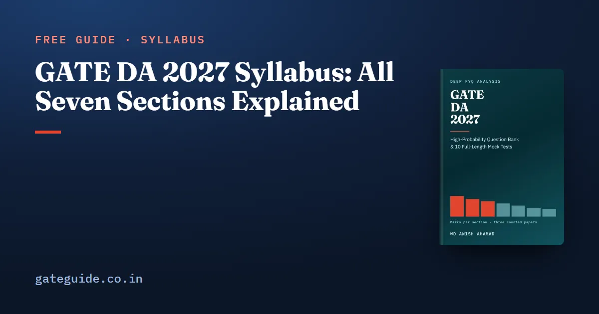

GATE DA 2027 Syllabus: All Seven Sections Explained

The GATE DA 2027 syllabus has seven technical sections worth 85 marks, plus General Aptitude worth 15. The official document is one page and names 132 phrases. This guide walks through each section, explains what its phrases mean when they become questions, and shows which of them the three papers set so far have actually used.
In this guide
- Key takeaways
- What a syllabus phrase is, and why the count matters
- The seven sections at a glance
- Sections 1 to 3: the mathematics
- Section 4: programming, data structures and algorithms
- Section 5: one word, two meanings
- Sections 6 and 7: the methods
- General Aptitude sits outside the DA document
- The named topics no paper has used yet
- How to use this syllabus in your plan
- Quick revision
Key takeaways
- The DA syllabus names seven sections. General Aptitude is a separate, common syllabus worth 15 marks.
- The 2027 text is word for word the 2026 text. All three counted papers, 2024 to 2026, were set on the same phrases.
- Probability and Statistics is the largest section on the counted record, 55 of the 255 technical marks set so far.
- Four named topic groups have never drawn a counted question: confidence intervals with the z, t and chi-squared tests, LU decomposition, linked lists, and functions of a single variable on their own.
- The word "normalization" appears in Section 5 in a data sense, and "normal form" sits beside it in a schema sense. They are different topics.
- Three papers show patterns, not trends. Read every named phrase, then spend extra depth where the papers keep returning.
What a syllabus phrase is, and why the count matters
The official document lists topics as short phrases separated by commas and semicolons. A phrase is one such item, such as "Bayes Theorem" or "k-folds cross-validation". The 2027 document has 132 of them across the seven sections.
A counted question is a question from the 2024, 2025 or 2026 DA paper that the GATE DA 2027 book placed on one of these phrases, using the official answer key for its marks and type. A topic group is a cluster of related phrases, such as "Search algorithms: linear and binary search". These three words are all you need to read the rest of this guide.
Remember: The syllabus decides what can be asked. The past papers only show how often something has been asked so far.
The seven sections at a glance
The table puts each section beside its phrase count and its counted marks. The marks are the three papers added together, with the mean per paper.
| Section | Phrases | Marks 2024 / 2025 / 2026 | Mean |
|---|---|---|---|
| 1. Probability and Statistics | 35 | 15 / 19 / 21 | 18.3 |
| 2. Linear Algebra | 18 | 10 / 12 / 8 | 10.0 |
| 3. Calculus and Optimization | 6 | 8 / 11 / 2 | 7.0 |
| 4. Programming, Data Structures and Algorithms | 18 | 20 / 14 / 14 | 16.0 |
| 5. Database Management and Warehousing | 19 | 7 / 11 / 18 | 12.0 |
| 6. Machine Learning | 26 | 15 / 12 / 14 | 13.7 |
| 7. Search, logic, reasoning under uncertainty | 10 | 10 / 6 / 8 | 8.0 |
Phrase count and marks do not line up. Calculus has only six phrases and once carried 11 marks. Section 5 has 19 phrases and has run from 7 marks to 18.
Sections 1 to 3: the mathematics
Section 1, Probability and Statistics, runs from counting and the axioms through Bayes' theorem, expectation, the named distributions and the central limit theorem. It ends with confidence intervals and the z, t and chi-squared tests. The papers have used the probability end heavily. Four groups appeared in all three papers: continuous random variables with the CDF, the named distributions, counting with the axioms, and Bayes' theorem.
Section 2, Linear Algebra, names vector spaces, special matrices (projection, orthogonal, idempotent, partition), quadratic forms, systems of equations, eigenvalues, rank, LU and the singular value decomposition. The special matrices, eigenvalues and vector spaces appeared in every paper. LU decomposition has never been set.
Section 3, Calculus and Optimization, is one sentence: functions of a single variable, limits, continuity and differentiability, Taylor series, maxima and minima. Note what it leaves out. It says "single variable" twice and names no integration at all.
Trap: Section 1 lists Poisson among the continuous distributions. Poisson is discrete. Learn it as a distribution on 0, 1, 2 and so on, whatever the list says.
Section 4: programming, data structures and algorithms
This section names Python, the basic data structures, linear and binary search, three simple sorts, mergesort and quicksort, and basic graph algorithms. In the papers it has been a reading-code section. Tracing Python or pseudocode carried 18 of its 48 counted marks and appeared in every paper.
Graph traversals, binary search and the basic sorts also appeared in all three papers. Linked lists and mergesort are named and have never been set as questions of their own.
Section 5: one word, two meanings
Section 5 covers the ER model, relational algebra, tuple calculus, SQL, constraints, normal form, file organisation, indexing, data types, data transformation and warehouse modelling. Relational algebra with tuple calculus, SQL and normal forms appeared in all three papers.
The trap is the word normalization. In this section it appears as a data transformation: rescaling an attribute's values. "Normal form", in the same paragraph, is schema design. Here is the data sense with numbers of my own.
Worked example: the data-transformation sense
Suppose an attribute has mean 50 and standard deviation 8, and one record holds the value 70. The z-score rescales it by subtracting the mean and dividing by the standard deviation:
If the same attribute instead runs from a minimum of 40 to a maximum of 90, min-max rescaling to the range 0 to 1 gives:
Both are "normalization". Neither has anything to do with 3NF or BCNF.
Trap: When a question gives you the minimum, maximum, mean and standard deviation together, decide which formula is asked for before you substitute. Using the wrong pair of numbers is the whole mistake.
Sections 6 and 7: the methods
Section 6, Machine Learning, splits into supervised learning (regressions, k-nearest neighbour, naive Bayes, linear discriminant analysis, support vector machines, decision trees, bias-variance, cross-validation, neural networks) and unsupervised learning (k-means and k-medoid, hierarchical clustering, principal component analysis). It is the steadiest technical section, 12 to 15 marks. Classification problems, neural networks and hierarchical clustering appeared in every paper.
The syllabus prints "multiple-linkage" beside single-linkage. That is not a standard name. The book reads it as covering the other linkage rules, and the one counted question beyond single linkage, 2025 (Q30), contrasted it with complete linkage.
Section 7 names search (uninformed, informed, adversarial), propositional and predicate logic, and reasoning under uncertainty: conditional independence, variable elimination and sampling. It names categories, not algorithms. The papers filled that gap with the standard ones, such as breadth-first search, A* and minimax. Search and logic each drew 10 of the 24 counted marks.
General Aptitude sits outside the DA document
General Aptitude has its own syllabus, common to every GATE paper: verbal, quantitative, analytical and spatial aptitude. In all three DA papers it was ten questions and exactly 15 marks, all multiple choice. The General Aptitude preparation guide covers how to work it.
Because every GA question so far has been an MCQ, every one carried negative marking. The rules are the same as in every GATE paper; the marking scheme guide, which applies to every paper including DA, sets them out.
The named topics no paper has used yet
Four topic groups are named in the syllabus and drew no counted question in 2024, 2025 or 2026:
| Section | Named, never examined |
|---|---|
| Probability and Statistics | Confidence interval, z-test, t-test, chi-squared test |
| Linear Algebra | LU decomposition |
| Calculus and Optimization | Functions of a single variable, as a topic on its own |
| Programming, Data Structures and Algorithms | Linked lists |
The book's later chapters list three of these as the groups to read, because "functions of a single variable" is the setting of every calculus question rather than a separate topic. Either way, the zero is real: the 2026 paper was set on the same words and did not use them.
That zero still predicts nothing for 2027. Three papers are too few for an absence to mean much, and these topics are short. Give each one an honest reading.
In one line: Every phrase on the page can be asked; the counts only tell you where to go deep first.
How to use this syllabus in your plan
- Print the one-page PDF from the GATE 2027 portal run by IIT Madras and tick each phrase as you finish it.
- Study sections in the order the marks are in: Probability and Statistics, Programming, Machine Learning, Database, Linear Algebra, Section 7, then Calculus.
- Inside each section, cover the groups that appeared in all three papers first.
- Then read every named phrase no paper has used yet.
- Keep General Aptitude in your week from the start, not the last month.
The book counts every question of all three papers against these phrases and prints the topic table for every section. This guide gives you the map; the GATE DA 2027 book gives the full counts and 907 questions written against it. Check the dates on the GATE 2027 exam dates guide and confirm the syllabus on the official portal before you rely on it.
Quick revision
- The DA syllabus has seven sections and 132 phrases; General Aptitude is a separate 15-mark syllabus.
- The 2027 text is identical to 2026 in every examinable word.
- Probability and Statistics carried 55 of the 255 counted technical marks, the most of any section.
- Section 3 is single-variable only and names no integration.
- "Normalization" in Section 5 is data rescaling; "normal form" is schema design.
- Never examined so far: confidence intervals and tests, LU, linked lists, single-variable functions on their own.
- "Multiple-linkage" is the syllabus's own word; learn complete linkage beside single linkage.
Frequently asked questions
What is the GATE DA 2027 syllabus?
It has seven technical sections: Probability and Statistics, Linear Algebra, Calculus and Optimization, Programming, Data Structures and Algorithms, Database Management and Warehousing, Machine Learning, and a seventh section on search, logic and reasoning under uncertainty. General Aptitude, worth 15 marks, is common to every GATE paper and is published as a separate document.
Has the GATE DA syllabus changed for 2027?
No examinable word changed. A word-by-word comparison of the official 2026 and 2027 documents found no phrase added, removed or reworded across all 132 phrases. The only differences are labels, such as numbering the sections and dropping the (i) and (ii) before Supervised and Unsupervised Learning.
Which GATE DA syllabus topics have never been asked?
Across the three papers set so far, no counted question was placed on confidence intervals with the z, t and chi-squared tests, on LU decomposition, on linked lists, or on functions of a single variable treated as a topic on its own. All are still named in the 2027 syllabus, so read them briefly rather than skip them.
Is General Aptitude part of the GATE DA syllabus?
General Aptitude is part of the paper but not of the DA syllabus document. It is a separate syllabus, common to every GATE paper, and it carried exactly 15 marks in each of the 2024, 2025 and 2026 DA papers, ten questions with all of them multiple choice.
Where can I download the official GATE DA 2027 syllabus PDF?
The official one-page DA syllabus is published by IIT Madras on the GATE 2027 portal, gate2027.iitm.ac.in. Download it from there and keep it beside your study plan, because it is the only document that decides what can be asked. Check the portal again before the exam in case anything is revised.
Sources
- GATE 2027 official website (IIT Madras)
- GATE 2027 DA syllabus PDF (IIT Madras)
- GATE 2026 DA question paper (IIT Guwahati)
- GATE 2025 DA question paper (IIT Roorkee)
Dates, fees and the syllabus are set by the GATE 2027 organising institute and can change. Always confirm at gate2027.iitm.ac.in.